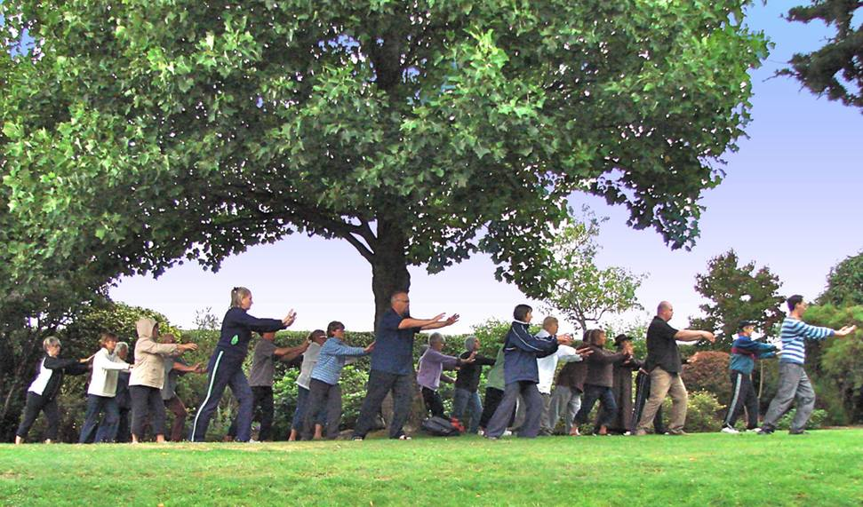

In traditional Chinese medicine, the balance of positive and negative (Yin and Yang) is believed to be essential for good health.
Acupuncturists need an in depth knowledge of chi and its relationship to various organs in the body as this is essential for the nature of the work they do, In Tai Chi and Qigong we try to cultivate our understanding and feelings of Chi by resting our attention (awareness) on the slow movements or postures.
"Less time thinking, more time feeling".
Modern life forces us to spend more and more time in our heads. We are constantly projecting ourrselves into past or future events, but Chi cannot be found in past or future events. Life is what is happening now.
When we spend some time with our attention resting on the body we give the mind some rest. Try this simple exercise now:
Rest your attention on your hand and feel all there is to feel. Is your skin warm or cold? Are the muscles tense or relaxed? How are your joints today? You will soon notice you can't think and feel at the same time. As you become more tuned into the life force of the moment, the mind gets a rest.
The body does not 'do' past or future. It only comprehends the 'here and now'. When we use awareness of finer and finer sensations within the body, to anchor our mind in the now, we are cultivating the life force we call "Chi".
In everyday life, we still need to think of past or future, but we consciously decide how much energy we give to this. We are less vulnerable to being controlled by unconscious actions.
Knowledge of Chi wont give us more Chi. We have all the Chi we need if we just spend some time becoming aware of it and cultivating its free flow in our lives.

All Site Content ©2018 Rising Phoenix Tai Chi
our privacy policy
Built and supported by
Cardiff Search Engine Optimisation, Web Design,
and good cause fans Clear Intent